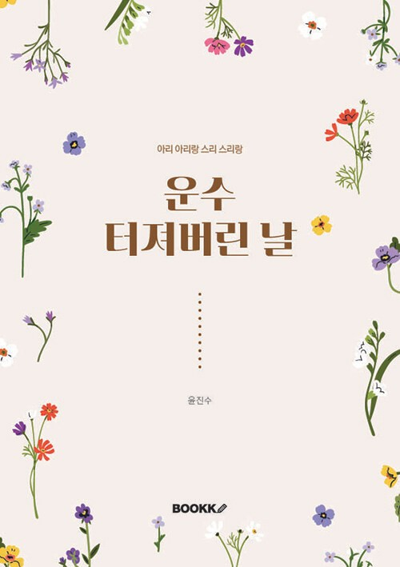
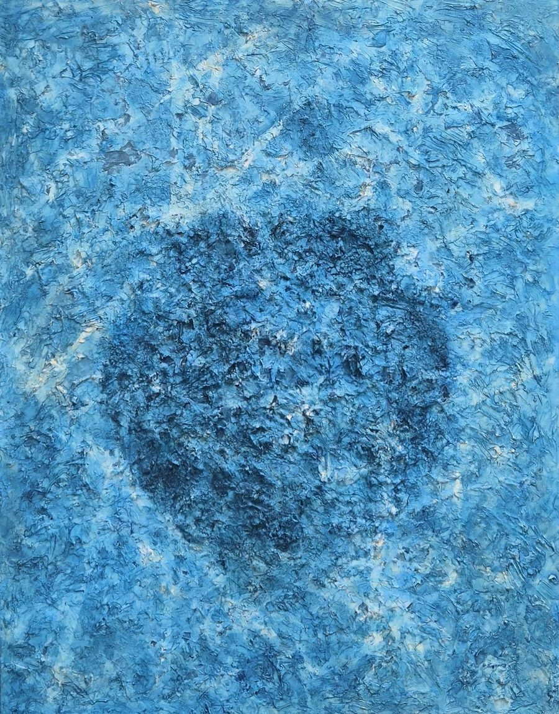
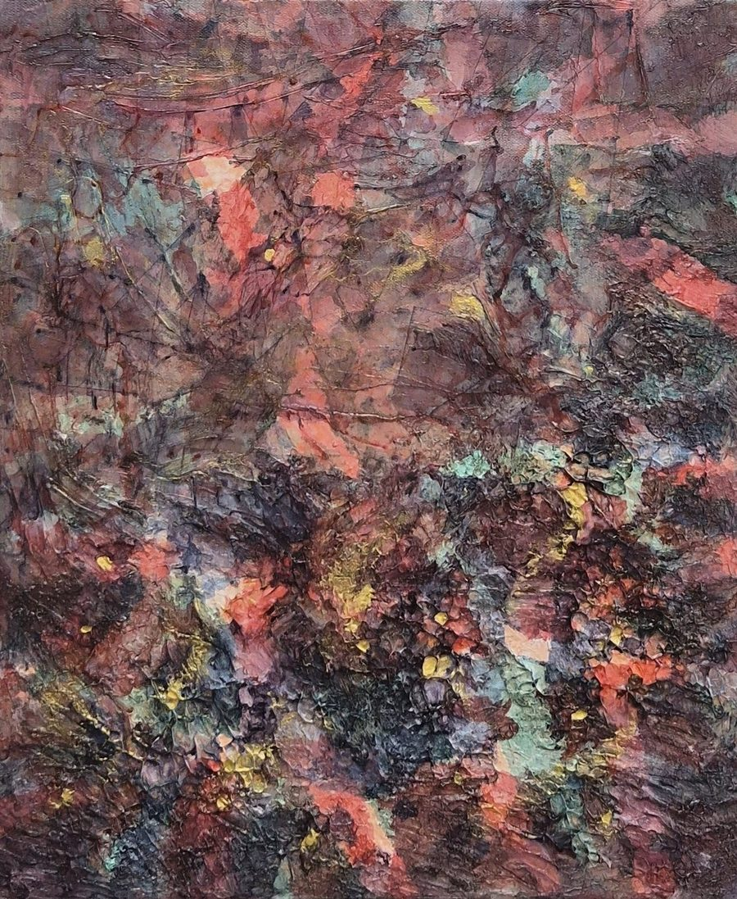
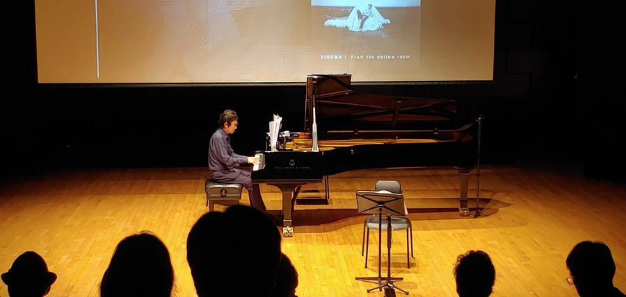

Literature
소설가 미스터윤
'미스터윤'이라는 필명으로 소설을 쓰는 윤진수는 카카오 브런치 연재를 거쳐 《오선지에 그려진 사랑》(상/하), 《악보제작소》, 《운수 터져버린 날》을 출간했다.
세 종, 네 권의 판매 수익 중 작가에게 돌아오는 몫은 전액 장애인 보호시설인 암사재활원에 기부되고 있으며, 현재는 자전적 소설 《영창의 피아노》를 연재하고 있다.
미스터윤 웹사이트 보기 →

캔버스 위의 기억, 건반 위의 순간, 그리고 문장 속의 사람들 — 하나의 예술적 시선으로 그림을 그리고, 연주하고, 글을 씁니다.
윤진수(b.1975)는 한양대학교 전자공학과를 졸업하고 LG전자에서 근무한 뒤, 2023년 홍익대학교 미술대학원 회화과를 졸업했다. 한지와 아크릴을 결합한 독자적인 기법으로 시간이 표면과 기억 위에 남기는 흔적을 그려내는 연작 <Hidden Memories>를 이어오고 있다.
서울 국회아트갤러리를 비롯해 파리 루브르 카루젤(Carrousel du Louvre), 밀라노 개인전 등 국내외에서 작품을 선보여왔으며, 2024년 파리 아트쇼핑(Art Shopping)에서는 심사위원 특별상 (Prix de la Critique)을 수상했다.
갤러리 웹사이트 보기 →


2024년부터 피아노 연주자로 활동을 시작한 윤진수는 2025년 바이올린 곽윤미, 첼로 김지혜와 함께 클래식 3중주 MoCA Trio(Music on Contemporary Arts)를 결성했다.
같은 해 5월, 대전예술가의 집 누리홀에서 첫 연주회 '2025 FUSION CLASSIC – Music of Memories'를 열어 총 11곡을 선보였으며, 2026년에는 서울에서의 공연을 준비하고 있다.
MoCA Trio 웹사이트 보기 →'미스터윤'이라는 필명으로 소설을 쓰는 윤진수는 카카오 브런치 연재를 거쳐 《오선지에 그려진 사랑》(상/하), 《악보제작소》, 《운수 터져버린 날》을 출간했다.
세 종, 네 권의 판매 수익 중 작가에게 돌아오는 몫은 전액 장애인 보호시설인 암사재활원에 기부되고 있으며, 현재는 자전적 소설 《영창의 피아노》를 연재하고 있다.
미스터윤 웹사이트 보기 →
